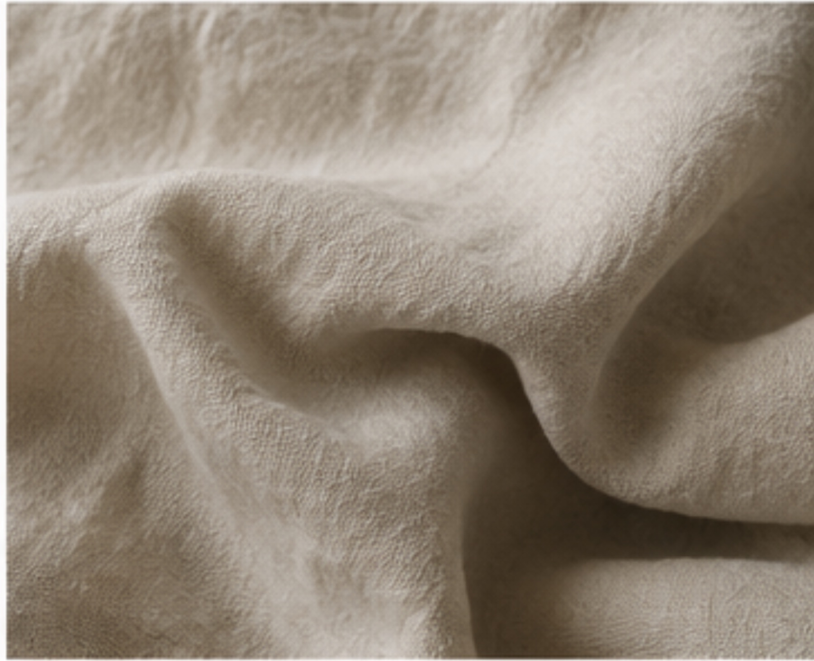

LinneTvättat linne
Luftigt. Avslappnat. Levande.
- Känsla
- Mjuk, luftig, naturligt skrynklig struktur
- Vikt
- 160 gsm
- Material
- 100 % linne
- Värme
- Sover svalt — andas och reglerar värmen
- Passar
- Varma sovare och dig som gillar ett avslappnat uttryck